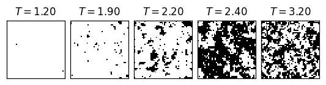
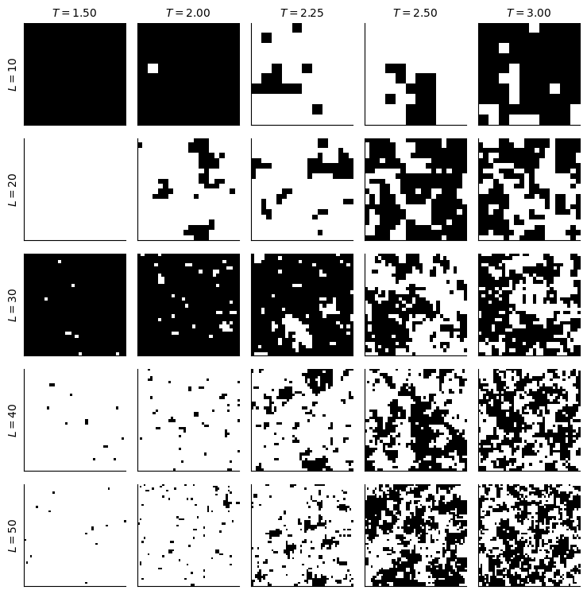
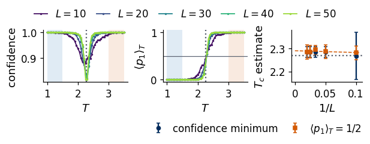

This notebook gathers everything the lecture shows about the Ising model in a form that runs on a laptop CPU. We first set up the model and a Metropolis sampler implemented in JAX, using jit for compilation, vmap for many chains in parallel and lax.scan for the loop over sweeps. With it we generate datasets of configurations for \(L = 10, 20, 30, 40, 50\), saved to data/ising_L{L}.npz, and compare their magnetisation and energy with Onsager’s exact results. We then draw the pictures used in the lecture — a 1D chain, snapshots across \(T_c\), the dataset — and finally train a convolutional neural network (CNN) only far from the transition, read off its confidence at every temperature, and follow how the resulting estimate of \(T_c\) depends on \(L\).
Spins \(s_i=\pm1\) sit on an \(L\times L\) lattice with periodic boundaries, \(N=L^2\), with \[
H(\mathbf s) = -J\sum_{\langle i,j\rangle} s_is_j,\qquad p(\mathbf s)=\frac{e^{-\beta H(\mathbf s)}}{Z},\qquad Z=\sum_{\mathbf s}e^{-\beta H(\mathbf s)},
\] and \(J=k_B=1\). The observables per spin are \(m=\frac1N\sum_i s_i\) and \(e=H/N\).
The Metropolis algorithm proposes to flip a spin \(s_i\), which changes the energy by \(\Delta E = 2s_i\sum_{j\in{\rm nn}(i)}s_j\), and accepts the flip with probability \(\min(1,e^{-\beta\Delta E})\). Spins of one colour of a chessboard do not interact with each other, so all of them can be updated at once; one sweep is the black half followed by the white half. In JAX the sweep is a pure function, lax.scan repeats it, vmap runs many independent chains in parallel, and jit compiles the whole procedure.
Code
def chessboard(L): x, y = np.meshgrid(np.arange(L), np.arange(L), indexing="ij")return jnp.asarray((x + y) %2==0)def sweep(s, key, beta, black):for colour in (black, ~black): key, sub = jax.random.split(key) nn = jnp.roll(s, 1, 0) + jnp.roll(s, -1, 0) + jnp.roll(s, 1, 1) + jnp.roll(s, -1, 1) accept = jax.random.uniform(sub, s.shape) < jnp.exp(-beta *2.0* s * nn) s = jnp.where(colour & accept, -s, s)return s, key@partial(jax.jit, static_argnames=("n_equil", "n_samples", "n_between"))def sample_chains(s0, keys, Ts, black, n_equil, n_samples, n_between):# every chain is cooled through Ts; at each T: n_equil sweeps, then n_samples stored every n_between sweepsdef chain(s, key):def at_T(carry, T): step =lambda c, _: (sweep(c[0], c[1], 1.0/ T, black), None) carry, _ = lax.scan(step, carry, None, length=n_equil)def store(c, _): c, _ = lax.scan(step, c, None, length=n_between)return c, c[0].astype(jnp.int8)return lax.scan(store, carry, None, length=n_samples)return lax.scan(at_T, (s, key), Ts)[1]return jax.vmap(chain)(s0, keys)
2. The datasets
For every \(L\) we use 51 temperatures from 3.5 down to 1.0 (step 0.05). Forty independent chains are cooled through this grid, and at each temperature every chain contributes 5 configurations separated by \(2L\) sweeps, which gives 200 configurations per temperature. Each file stores
L = 10: loaded (51, 200, 10, 10) in 0 s
L = 20: loaded (51, 200, 20, 20) in 0 s
L = 30: loaded (51, 200, 30, 30) in 0 s
L = 40: generated (51, 200, 40, 40) in 407 s
L = 50: generated (51, 200, 50, 50) in 649 s
3. Magnetisation and energy of finite lattices
The exact results for the infinite lattice serve as the reference. Below \(T_c\) the spontaneous magnetisation is \(M(T) = \left(1-\sinh^{-4}(2/T)\right)^{1/8}\) (Yang), and the energy per spin is \(u(T) = -\coth(2\beta)\left[1+\frac{2}{\pi}\left(2\tanh^2(2\beta)-1\right)K(\kappa)\right]\) with \(\kappa = 2\sinh(2\beta)/\cosh^2(2\beta)\) (Onsager). On finite lattices \(\langle|m|\rangle\) stays non-zero above \(T_c\) and the transition is rounded; in the figure this rounding should shrink as \(L\) grows.
We start with a 1D chain. With \(h=0\) its bonds are independent: neighbours are parallel with probability \(p=e^{\beta J}/(e^{\beta J}+e^{-\beta J})\), so chains can be sampled exactly, bond by bond. The correlation length is \(\xi=-1/\ln\tanh(\beta J)\), and the three rows below, at \(T = 0.6\), \(1.0\) and \(5.0\), show domains whose length shrinks with temperature. The next cell turns to two dimensions and shows \(L=50\) snapshots across \(T_c\), followed by a second figure with a grid of configurations from the dataset.
T_row = [1.2, 1.9, 2.2, 2.4, 3.2]fig, axs = plt.subplots(1, 5, figsize=(10, 2.2))for a, Tv inzip(axs, T_row): i =int(np.argmin(abs(T_GRID - Tv))) a.imshow(data[50][i, 0], cmap="gray", vmin=-1, vmax=1, interpolation="nearest"); a.set_xticks([]); a.set_yticks([]) a.set_title(f"$T = {T_GRID[i]:.2f}$", fontsize=10)plt.tight_layout(); plt.savefig(f"{OUT}/gen_Ising_configs_L50_row.png", dpi=170, bbox_inches="tight"); plt.show()T_show = [1.5, 2.0, 2.25, 2.5, 3.0]fig, axs = plt.subplots(len(L_LIST), len(T_show), figsize=(7.5, 7.6))for r, L inenumerate(L_LIST):for k, Tv inenumerate(T_show): i =int(np.argmin(abs(T_GRID - Tv))); a = axs[r, k] a.imshow(data[L][i, 0], cmap="gray", vmin=-1, vmax=1, interpolation="nearest"); a.set_xticks([]); a.set_yticks([])if r ==0: a.set_title(f"$T = {T_GRID[i]:.2f}$", fontsize=10)if k ==0: a.set_ylabel(f"$L = {L}$", fontsize=10)plt.tight_layout(); plt.savefig(f"{OUT}/gen_Ising_dataset.png", dpi=170, bbox_inches="tight"); plt.show()


5. The critical temperature from CNN confidence
The network is trained only where the answer is clear: configurations with \(T<1.5\) get the label 0 (ordered), those with \(T>3\) the label 1 (disordered), and nothing between 1.5 and 3 is used for training.
The network, built with Flax NNX, consists of two blocks of a \(3\times3\) convolution with 16 channels (with periodic boundaries, like the lattice), ReLU and \(2\times2\) max pooling, followed by global average pooling, a dense layer of 32 ReLU units and 2 outputs with softmax; it is trained with the cross-entropy loss and Adam. Global average pooling makes the same network work for every \(L\).
After training we predict at every temperature. For one configuration the network gives \(p_1\), the probability of “disordered”, and its confidence is \(\max(p_0,p_1)\). This yields two estimates of \(T_c\): the temperature where the average confidence is lowest, and the temperature where \(\langle p_1\rangle_T\) crosses \(1/2\). Each lattice size is trained with three seeds, and the printout gives the mean and spread of both estimates.
Code
class IsingCNN(nnx.Module):def__init__(self, *, rngs):self.c1 = nnx.Conv(1, 16, (3, 3), padding="CIRCULAR", rngs=rngs)self.c2 = nnx.Conv(16, 16, (3, 3), padding="CIRCULAR", rngs=rngs)self.d1 = nnx.Linear(16, 32, rngs=rngs);self.d2 = nnx.Linear(32, 2, rngs=rngs)def__call__(self, x): h = x[..., None] h = nnx.max_pool(nnx.relu(self.c1(h)), (2, 2), strides=(2, 2)) h = nnx.max_pool(nnx.relu(self.c2(h)), (2, 2), strides=(2, 2)) h = h.mean(axis=(1, 2)) # global average poolingreturnself.d2(nnx.relu(self.d1(h))) # logits@nnx.jitdef train_step(model, opt, x, y):def loss_fn(m):return optax.softmax_cross_entropy_with_integer_labels(m(x), y).mean() loss, grads = nnx.value_and_grad(loss_fn)(model) opt.update(model, grads)return loss@nnx.jitdef prob_disordered(model, x):return jax.nn.softmax(model(x))[:, 1]T_MIN, T_MAX =1.5, 3.0def train_cnn(L, seed, epochs=8, batch=64): c = data[L] low, high = T_GRID < T_MIN, T_GRID > T_MAX X = np.concatenate([c[low].reshape(-1, L, L), c[high].reshape(-1, L, L)]).astype(np.float32) y = np.concatenate([np.zeros(c[low].shape[0] * c.shape[1], int), np.ones(c[high].shape[0] * c.shape[1], int)]) model = IsingCNN(rngs=nnx.Rngs(seed)); opt = nnx.Optimizer(model, optax.adam(1e-3), wrt=nnx.Param) X, y = jnp.asarray(X), jnp.asarray(y); key = jax.random.PRNGKey(seed)for ep inrange(epochs): key, k = jax.random.split(key); perm = jax.random.permutation(k, len(y))for i inrange(0, len(y) - batch +1, batch): train_step(model, opt, X[perm[i:i + batch]], y[perm[i:i + batch]]) acc =float(((prob_disordered(model, X) >0.5) == y).mean())return model, accdef predict_all(model, L): c = jnp.asarray(data[L].reshape(-1, L, L), jnp.float32)return np.asarray(prob_disordered(model, c)).reshape(len(T_GRID), -1)def estimates(p1): conf = np.maximum(p1, 1- p1).mean(1); p1m = p1.mean(1) i =int(np.argmin(conf)); T_conf = T_GRID[i] j =int(np.where(np.diff(np.sign(p1m -0.5)) !=0)[0][0]) T_cross = T_GRID[j] + (0.5- p1m[j]) * (T_GRID[j +1] - T_GRID[j]) / (p1m[j +1] - p1m[j])return conf, p1m, T_conf, T_crossSEEDS = [0, 1, 2]results = {}t0 = time.time()for L in L_LIST: runs = []for seed in SEEDS: model, acc = train_cnn(L, seed) runs.append((acc,) + estimates(predict_all(model, L))) results[L] = runs Tc_conf = np.array([r[3] for r in runs]); Tc_cross = np.array([r[4] for r in runs])print(f"L = {L:2d}: training accuracy {np.mean([r[0] for r in runs]):.4f}; T_c from the confidence minimum "f"{Tc_conf.mean():.3f} +- {Tc_conf.std():.3f}; from <p1> = 1/2: {Tc_cross.mean():.3f} +- {Tc_cross.std():.3f}"f" ({time.time() - t0:.0f} s)")
L = 10: training accuracy 0.9998; T_c from the confidence minimum 2.267 +- 0.103; from <p1> = 1/2: 2.281 +- 0.030 (23 s)
L = 20: training accuracy 1.0000; T_c from the confidence minimum 2.283 +- 0.024; from <p1> = 1/2: 2.286 +- 0.030 (55 s)
L = 30: training accuracy 1.0000; T_c from the confidence minimum 2.283 +- 0.024; from <p1> = 1/2: 2.293 +- 0.018 (127 s)
L = 40: training accuracy 1.0000; T_c from the confidence minimum 2.283 +- 0.024; from <p1> = 1/2: 2.285 +- 0.027 (252 s)
L = 50: training accuracy 1.0000; T_c from the confidence minimum 2.283 +- 0.024; from <p1> = 1/2: 2.285 +- 0.031 (433 s)
Code
fig, ax = plt.subplots(1, 3, figsize=(15, 3.8), gridspec_kw=dict(width_ratios=[1.3, 1.3, 1]))for a in ax[:2]: a.axvspan(T_GRID.min(), T_MIN, color=blue, alpha=0.12, lw=0); a.axvspan(T_MAX, T_GRID.max(), color=orange, alpha=0.12, lw=0) a.axvline(TC, color=grey, ls=":")for L in L_LIST: conf = np.mean([r[1] for r in results[L]], axis=0); p1m = np.mean([r[2] for r in results[L]], axis=0) ax[0].plot(T_GRID, conf, ".-", ms=3, color=colors_L[L], label=f"$L={L}$") ax[1].plot(T_GRID, p1m, ".-", ms=3, color=colors_L[L])ax[0].set_ylabel(r"average confidence $\langle\max(p_0,p_1)\rangle_T$"); ax[0].set_xlabel("$T$"); ax[0].legend(frameon=False, fontsize=8)ax[1].axhline(0.5, color=grey, lw=0.8); ax[1].set_ylabel(r"$\langle p_1\rangle_T$"); ax[1].set_xlabel("$T$")invL =1/ np.array(L_LIST)tc_conf = np.array([np.mean([r[3] for r in results[L]]) for L in L_LIST]); tc_conf_e = np.array([np.std([r[3] for r in results[L]]) for L in L_LIST])tc_cross = np.array([np.mean([r[4] for r in results[L]]) for L in L_LIST]); tc_cross_e = np.array([np.std([r[4] for r in results[L]]) for L in L_LIST])ax[2].errorbar(invL, tc_conf, tc_conf_e, fmt="o", color=navy, capsize=2, label="confidence minimum")ax[2].errorbar(invL, tc_cross, tc_cross_e, fmt="s", color=orange, capsize=2, label=r"$\langle p_1\rangle = 1/2$")fit = np.polyfit(invL, tc_cross, 1); xx = np.linspace(0, invL.max() *1.05, 50)ax[2].plot(xx, np.polyval(fit, xx), "--", color=orange, lw=1)ax[2].axhline(TC, color=grey, ls=":"); ax[2].set_xlabel("$1/L$"); ax[2].set_ylabel("estimate of $T_c$"); ax[2].legend(frameon=False, fontsize=8)fig.tight_layout(); fig.savefig(f"{OUT}/gen_Ising_confidence_vs_T_L.png", dpi=170, bbox_inches="tight"); plt.show()print(f"<p1> = 1/2 crossing extrapolated to L -> infinity (linear in 1/L): {fit[1]:.3f} (exact {TC:.4f})")NUMBERS.update(tc_conf={str(L): [round(float(a), 3), round(float(b), 3)] for L, a, b inzip(L_LIST, tc_conf, tc_conf_e)}, tc_cross={str(L): [round(float(a), 3), round(float(b), 3)] for L, a, b inzip(L_LIST, tc_cross, tc_cross_e)}, tc_cross_extrap=round(float(fit[1]), 3))

<p1> = 1/2 crossing extrapolated to L -> infinity (linear in 1/L): 2.290 (exact 2.2692)
The estimates lie between \(2.267\) and \(2.293\) for all sizes, and the linear extrapolation of the crossing in \(1/L\) gives \(2.290\), against the exact \(2.2692\). The final figure, used on the slide, shows a single size, \(L=50\) with seed 0, with the confidence of every configuration coloured by the predicted phase; its minimum lies at \(T=2.25\).